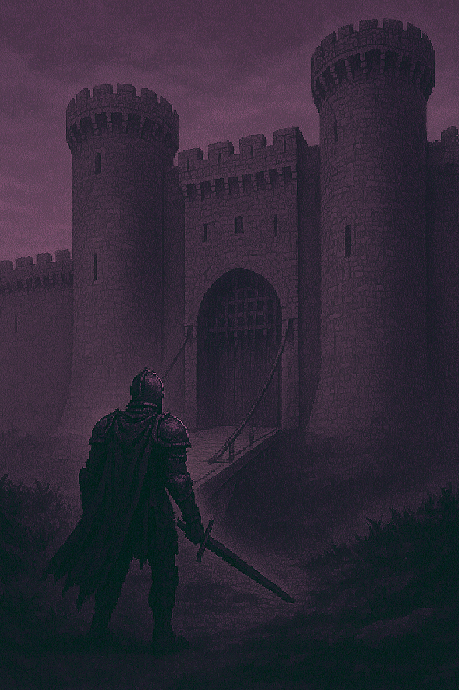

Le vent hurle entre les pierres brisées du rempart. Devant toi, le pont-levis de Fort Noctem s’étire au-dessus d’un gouffre insondable. Les chaînes du mécanisme grincent, lourdes de rouille et de sang séché. Des silhouettes, immobiles, gardent l’entrée — des chevaliers sans visage, statues ou revenants, tu ne saurais le dire. Tu poses la main sur la garde de ton épée. Chaque pas sur le bois craquant résonne comme un glas. Soudain, les yeux des gardiens s’embrasent d’une lueur spectrale. Tu comprends que ce passage ne se franchit qu’au prix du sang.